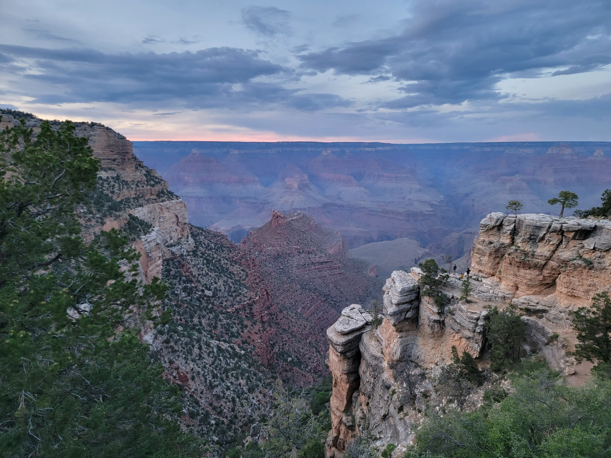
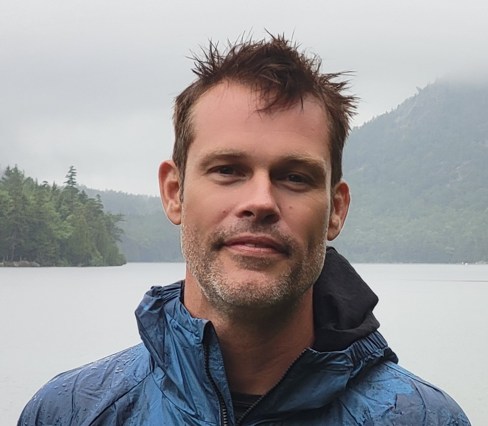

Creative Practice
My creative work blends aerial photography, electronic music production, and digital experimentation to build immersive stories with atmosphere, movement, and sound.


Creative Technologist
I build digital experiences and operational systems, combining creativity, software, and business strategy to create practical solutions across branding, retail operations, and regulated markets.
My creative work blends aerial photography, electronic music production, and digital experimentation to build immersive stories with atmosphere, movement, and sound.
I support businesses with operational systems, branding strategy, retail and wholesale structure, and process optimization across regulated and specialty markets.
Software and creative technology connect both sides of my work, helping me turn artistic direction into repeatable systems, clearer workflows, and measurable execution.
Capturing landscapes and urban spaces with cinematic framing, motion, and light to create atmosphere-driven visual narratives.
Producing textured, synth-forward compositions focused on rhythm, tension, and emotional detail shaped by Detroit electronic culture.
Prototyping digital workflows that connect media, software, and interaction, from generative concepts to polished web experiences.
Consulting grounded in operational clarity, strong brand systems, and channel strategy for regulated and specialty industries.
Consulting Focus
I work where creative identity and practical execution meet: operations, branding, retail systems, and process design.
Small Business
Fleet performance systems, maintenance workflows, and operational process design for reliability and scalable growth.
Cannabis
Operating models, brand consistency, and channel strategy across storefront retail, wholesale relationships, and cultivation flow.
Entheogenic Plants
Sales structure, market positioning, and compliance-aware planning for emerging regulated categories.
Socials